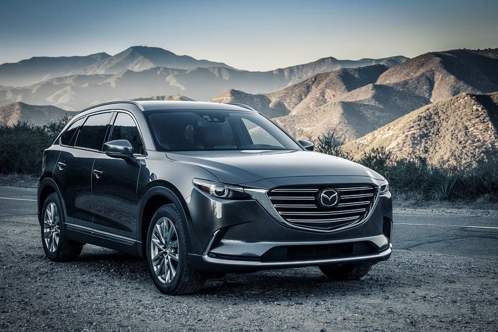
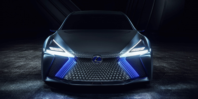
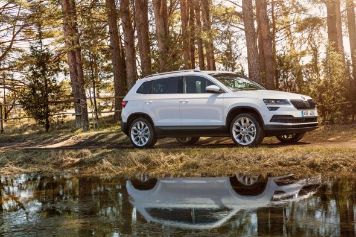
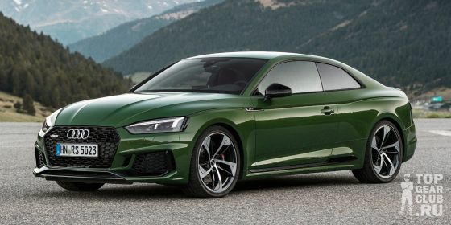

Новости
-

ПРЕМЬЕРА НОВОГО КРОССОВЕРА MAZDA CX-9
Российское представительство компании Mazda объявляет о возвращении в российскую модельную линейку премиального семиместного кроссовера Mazda CX-9. Продажи стартуют в октябре 2017 года.
Свежая интерпретация дизайна «KODO – дух движения» наделяет новый Mazda CX-9 премиальным обликом, а концепция вождения Jinba-ittai (единение всадника и скакуна) обеспечивает великолепную управляемость в сочетании с выдающейся топливной экономичностью. Автомобиль обладает продуманным интерьером, продвинутыми технологиями безопасности i-ACTIVSENSE и системой полного привода i-ACTIV AWD. Актуальное поколение Mazda CX-9 стало первым оснащаемым новым 2,5-литровым турбированным бензиновым двигателем с непосредственным впрыском топлива, SKYACTIV-G 2.5T (231 л.с). Новый двигатель сочетается с 6-ти ступенчатой автоматической коробкой передач.
-

ПРЕМЬЕРА ФЛАГМАНСКОГО КОНЦЕПТА LEXUS LS+, ОРИЕНТИРОВАННОГО НА ВНЕДРЕНИЕ ТЕХНОЛОГИЙ АВТОПИЛОТИРОВАНИЯ К 2020 ГОДУ
Оснащенный самыми передовыми, высокотехнологичными решениями концепт-кар LS+ формирует образ флагманского седана LS в будущем: его дизайн футуристичен и вместе с тем величественен. Практическое применение демонстрируемых на концепт-каре технологий автоматизированного управления планируется начать в 2020 году.
Стремясь внести свой вклад в создание мира без дорожно-транспортных происшествий, Lexus активно разрабатывает и внедряет самые современные технологии, базирующиеся на концепции комплексного обеспечения безопасности - Integrated Safety Management Concept2. Для того, чтобы любой мог насладиться как безопасным, плавным движением, так и удовольствием от управления автомобилем, Lexus занимается разработкой технологий автоматизированного управления. В планах бренда – начало применения технологий автоматизированного управления, получивших название «Urban Teammate», на дорогах общего пользования в первой половине 2020 года.
-

НОВЫЙ Infiniti QX80 СОХРАНИТ ПРЕЖНЮЮ ПЛАТФОРМУ И АГРЕГАТЫ
К онцепт-кар Infiniti QX80 Monograph показал, что грядущий серийный внедорожник сохранит преемственность с предшественником. Передняя часть, корма, линия бокового остекления, габариты ― сразу видно, что это Infiniti QX80. А каким будет новинка с технической точки зрения? Об этом президент Infiniti Motor Company Роланд Крюгер рассказал в интервью американскому изданию Motor Trend. По словам руководителя, исполинский кроссовер следующей генерации позаимствует всю технику у нынешней модели. По слухам, отличаться будут только ездовые настройки и оснащение, которое станет богаче. А проверить всё это мы сможем лишь в 2018 году, когда дебютирует «восьмидесятка».
Это по-прежнему будет автомобиль с интегрированной в силовую структуру рамой. Конструкцию кузова оптимизируют, увеличив долю высокопрочных сталей. В основу автомобиля ляжет нынешняя платформа. Подвеска ― двухрычажка спереди и многорычажка с пневмопружинами сзади. Скорей всего, гидроусилитель руля уступит место электроусилителю, но в остальном принципиальных изменений не ожидается. Силовой агрегат ожидается тот же, что устанавливается сейчас. Бензиновый атмосферный V8 5.6, который нынче развивает 405 сил и 560 Н•м, будет сочетаться и с семидиапазонной автоматической коробкой передач. По словам Крюгера, Infiniti QX80 успешен даже сейчас и обладает прекрасной архитектурой и технической начинкой.
-

ЗНАКОВОЕ СОБЫТИЕ В ИСТОРИИ МАРКИ: ŠKODA ВЫПУСТИЛА 20-МИЛИОННЫЙ АВТОМОБИЛЬ!
С конвейера завода ŠKODA в Квасинах сошел 20-миллионный автомобиль.
Юбилейной моделью стал компактный SUV ŠKODA KAROQ. Это достижение доказывает успешность стратегии развития чешской марки. С момента присоединения к концерну Volkswagen Group в 1991 году бренд развивается очень активно. «Выпуск 20-миллионного автомобиля — это грандиозное историческое событие для бренда, — заявил председатель Совета директоров ŠKODА AUTO Бернхард Майер (Bernhard Maier). — В этом году мы рассчитываем установить новые рекорды производства и продаж. Основой наших успехов является „Стратегия-2025“, благодаря ей ŠKODА готова к изменениям, которые произойдут в автомобильной индустрии и обществе в ближайшем будущем».
-

Прогноз от Тойоты: к 2025 году водородные авто будут стоить как гибриды
Следующее поколение автомобилей с двигателями на водородных топливных ячейках по стоимости будет сравнимо с бензиново-электрическими гибридными машинами. Такой прогноз на Токийском мотор-шоу озвучил генеральный менеджер по бизнес-планированию Toyota Motor Наомичи Хата.
«В начале 2020-х мы запустим новую технологию производства водородного топлива, и это обеспечит существенное продвижение вперед в вопросе развития автомобилей на водородных топливных ячейках», — цитирует топ-менеджера английское издание Autocar.
Новая технология значительно снизит себестоимость водородного топлива.
По словам Наомичи Хата, в настоящее время Toyota выпускает по 3000 водородных седанов Mirai в год, но к 2025 году объем выпуска таких машин возрастет как минимум в 10 раз.
-

BMW 7 СЕРИИ INDIVIDUAL EDITION BLACK ICE
BMW Group Россия представляет эксклюзивный BMW 7 серии Individual в исполнении edition Black Ice, созданный совместно с ателье BMW Individual специально для российских клиентов. Новая версия инновационного седана BMW воплощает утонченную роскошь и необузданную силу в уникальном стилистическом исполнении. Автомобили, выпускаемые ограниченными сериями и только на заказ, доступны для бронирования во всех дилерских центрах BMW c октября 2017 года.
Специальная версия BMW 7 серии Individual edition Black Ice отличается особым окрасом «Морозный Черный» металлик, недоступным для стандартных версий BMW 7 серии. Необычный эффект темной литой поверхности, мерцающей при попадании на нее света, достигается благодаря уникальной технологии окрашивания кузова. Базовый слой краски типа «металлик» покрывается особым матовым лаком, образуя переливы света и тени и подчеркивая силуэт автомобиля и его сильный характер. Все без исключения BMW 7 серии Individual edition Black Ice оснащаются аэродинамическим пакетом M Sport, элементы которого в черном цвете выглядят особенно стильно.
-

НОВЫЙ Audi RS5 ПРОШЕЛ ДОРОЖНЫЕ ИСПЫТАНИЯ
Автоэксперты провели тест-драйв Audi RS5. Для сравнения на трек вывели прямого конкурента модели Mercedes-AMG C63 S Coupe. Целью тестирования было не выявление лидера, среди конкурирующих машин, а просто сравнение и отметка преимуществ и недостатков двух купе.
На YouTube набирает популярность ролик испытания Audi RS5. Он вызывает неподдельный интерес автолюбителей со всего мира. Вместе с RS5 на испытания вышел Mercedes-AMG C63 S Coupe. По результатам борьбы нет ни победителей, не проигравших, ведь основной целью экспертов было сравнение этих двух автомобилей. По итогам водители, тестировавшие автомобили, отметили спортивный дифференциал RS5. У соперника, лучшими оказались отдача силовой установки, крутящий момент. Ещё одним преимуществом AMG C63 S Coupe стал задний привод.
-

Jaguar XE СТАЛ САМЫМ БЕЗОПАСНЫМ АВТОМОБИЛЕМ В СВОЕМ КЛАССЕ ПО ВЕРСИИ Euro NCAP В 2015 ГОДУ
В 2015 году Jaguar XE получил максимальный 5-звездочный рейтинг по итогам испытаний Euro NCAP. Присудив XE первое место в своем классе, жюри Euro NCAP отметило высочайший уровень базового оснащения модели системами активной и пассивной безопасности.
Кевин Страйд (Kevin Stride), директор модельного ряда Jaguar: «Мы поставили перед собой задачу создать в данном сегменте истинный автомобиль для водителя и в то же время обеспечить максимальный уровень защиты пассажиров и пешеходов. Благодаря сочетанию преимуществ нашей новой алюминиевой платформы и передовых технологий, нам удалось достичь всех наших целей. Jaguar XE уже стал образцом дорожной динамики, и новая награда Euro NCAP подтверждает, что мы добились превосходного уровня безопасности».